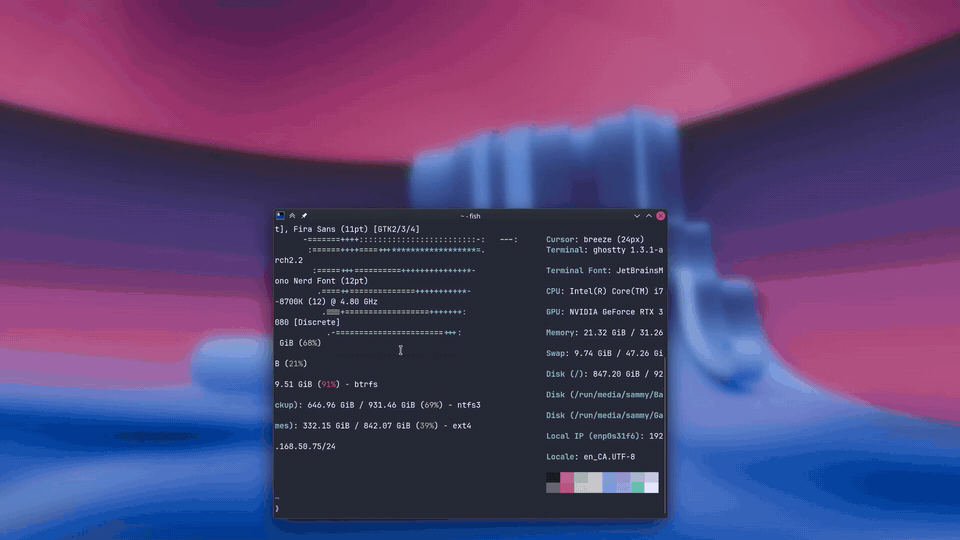

An explicit Approve step and a Face ID-style island for sudo and admin prompts. The camera stays off until you say so; your password is always the fallback.

Names the app and command. Camera is off until you approve.
Gaze runs liveness and recognition while the island scans.
The arc closes into a green ring, then authentication continues.
Shakes red, then drops to the normal password prompt.
Install from the AUR with any helper. This pulls in Gaze and wires the PAM gate automatically.
# yay, paru, or any AUR helper
yay -S facegate
Prefer to build by hand?
git clone https://aur.archlinux.org/facegate.git cd facegate && makepkg -si
From your Wayland session, activate FaceGate for your user.
facegate-enable
Add your face, then test.
facegate-settings sudo -k; sudo -v
Requires a Wayland compositor with layer-shell support. KWin on KDE Plasma gives the best multi-monitor placement. Undo any time with facegate-enable --disable or pacman -R facegate — Gaze and your templates stay intact.
sudo / polkit │ ▼ FaceGate consent module ── denied / unavailable ──► password │ approved (permission to start the camera, not authentication) ▼ pam_gaze.so ─► gazed ─► liveness + match │ ├─ failure ──► password └─ success ──► authenticated
Camera, templates and matching live in Gaze's root daemon. FaceGate never reads them.
A small compiled PAM module can only skip the scan or start it. Approval is never authentication.
Missing modules, timeouts, malformed replies and denials all return to the stock stack.
Gaze is young and not independently audited; treat face unlock as a convenience factor. Read the full threat model.